Murales:
Proyecto: Mural sobre la lectura infantil
2025
Proyecto realizado sobre un muro de 11m de ancho por 3,5m de alto. El objetivo principal del mural es promover la lectura desde la infancia, resaltando su papel fundamental en el desarrollo del pensamiento crítico, la transmisión de valores y el fomento de la imaginación. Además, busca poner en valor el momento íntimo familiar y el uso de la lectura como forma de entretenimiento, especialmente frente a la problemática actual con el uso excesivo de pantallas que también afecta a los más pequeños.
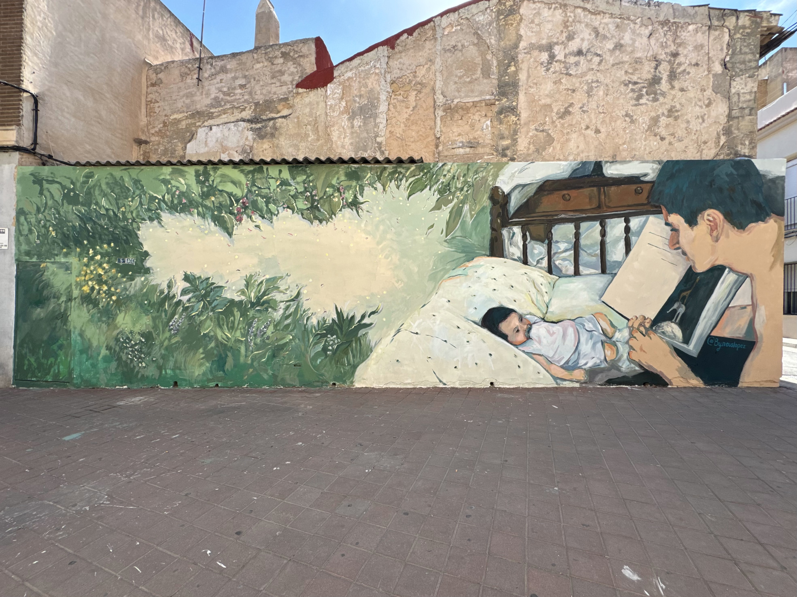
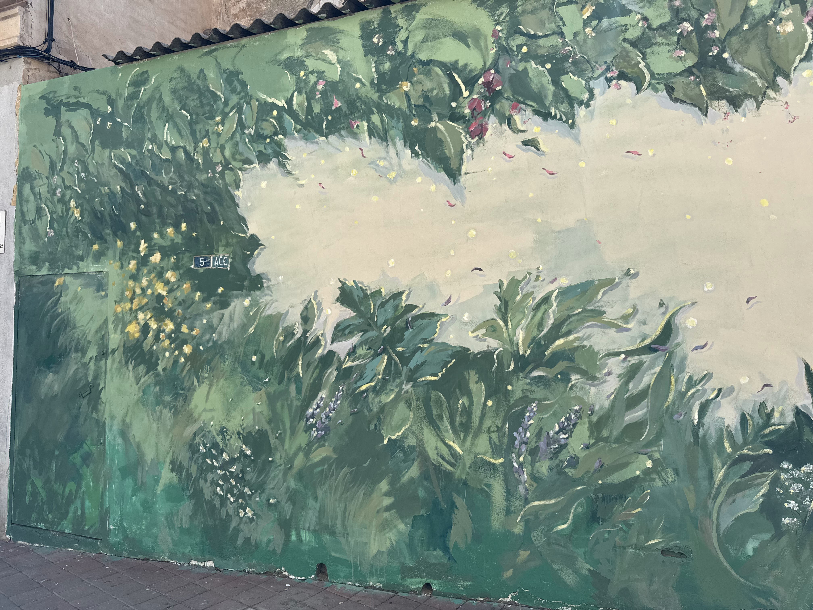
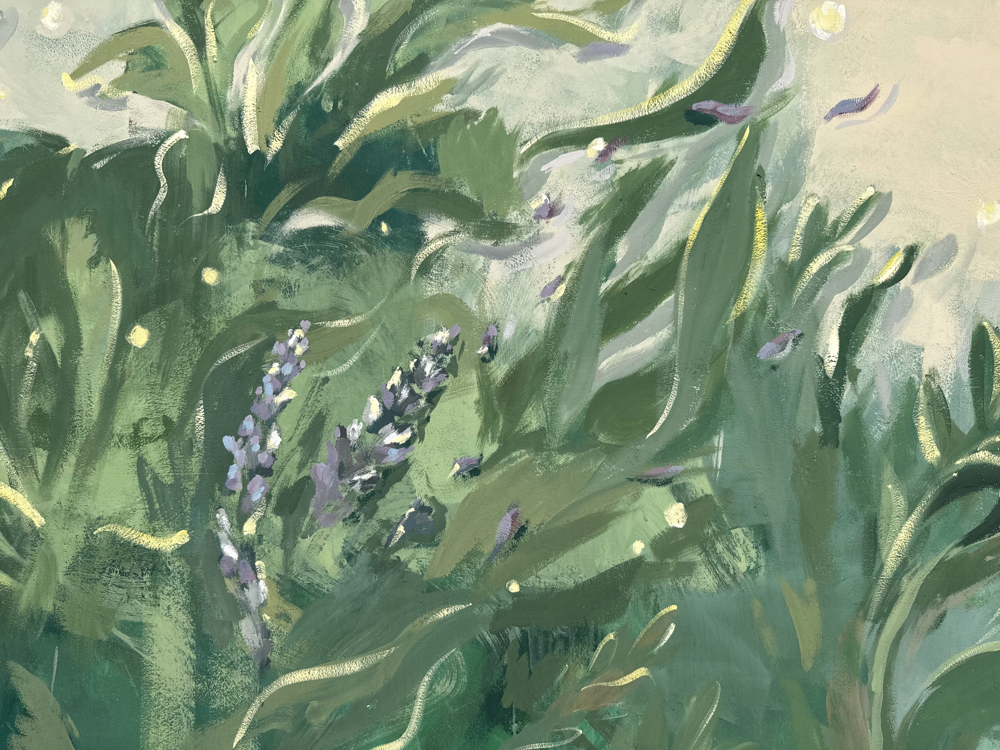
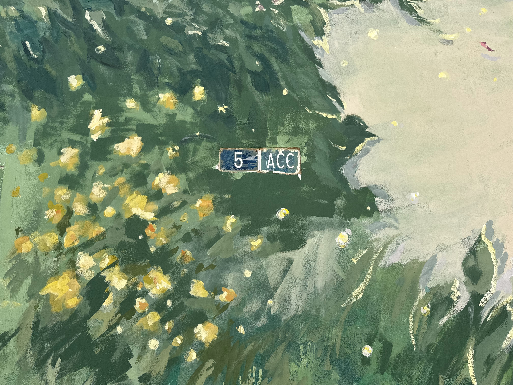
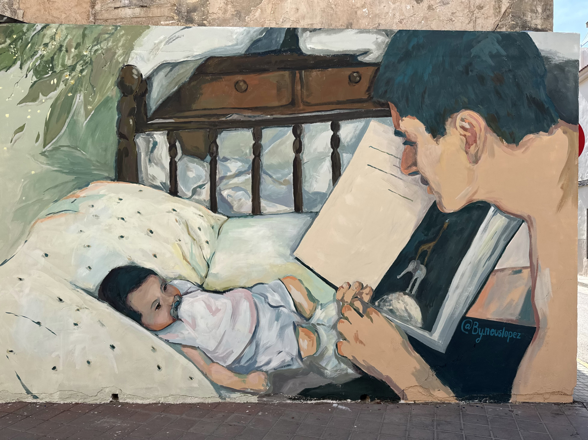
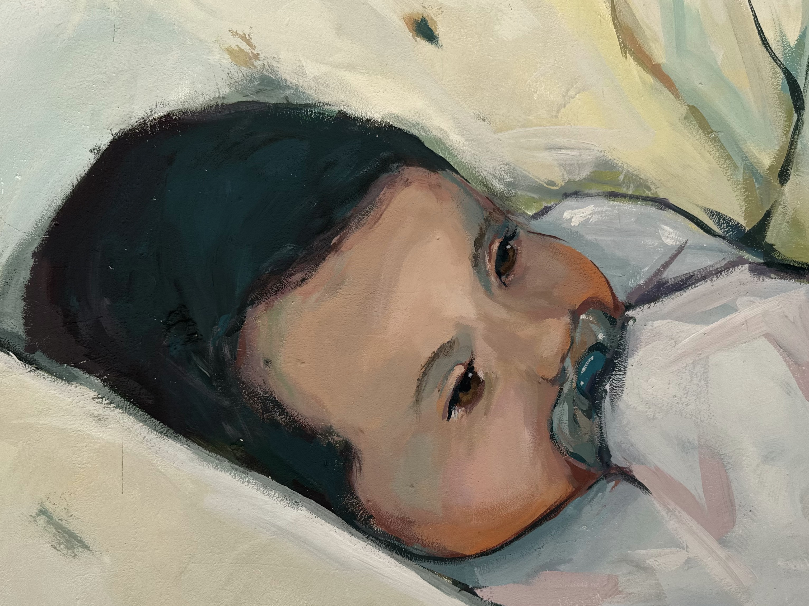
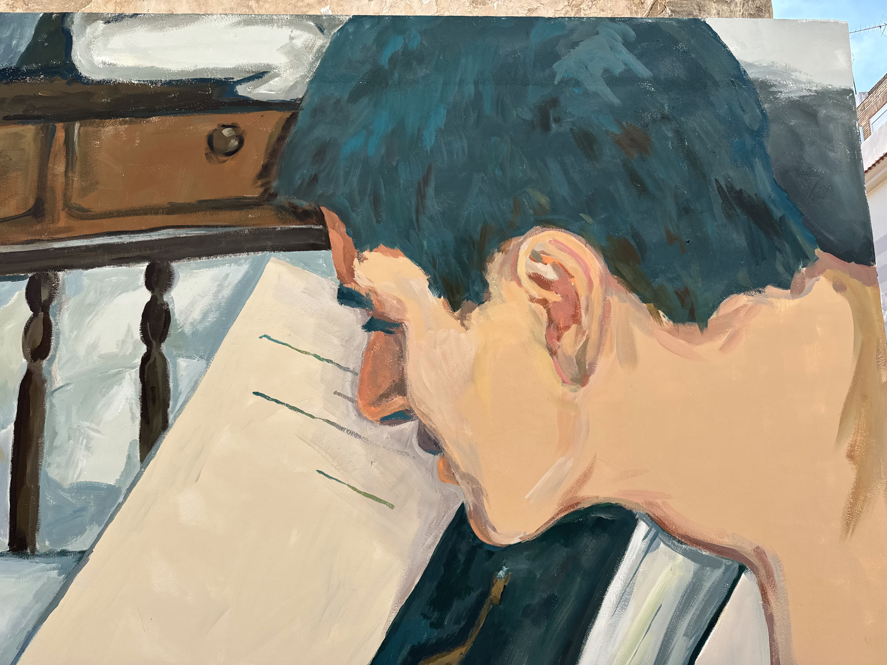
Proyecto: Mural Jolly Academy
2023
Para este proyecto se requería la realización de un mural ilustrativo sobre los diferentes certificados de inglés, además, buscamos integrar diferentes tipos de transportes para poder realizar dinámicas y ejercicios de vocabulario.
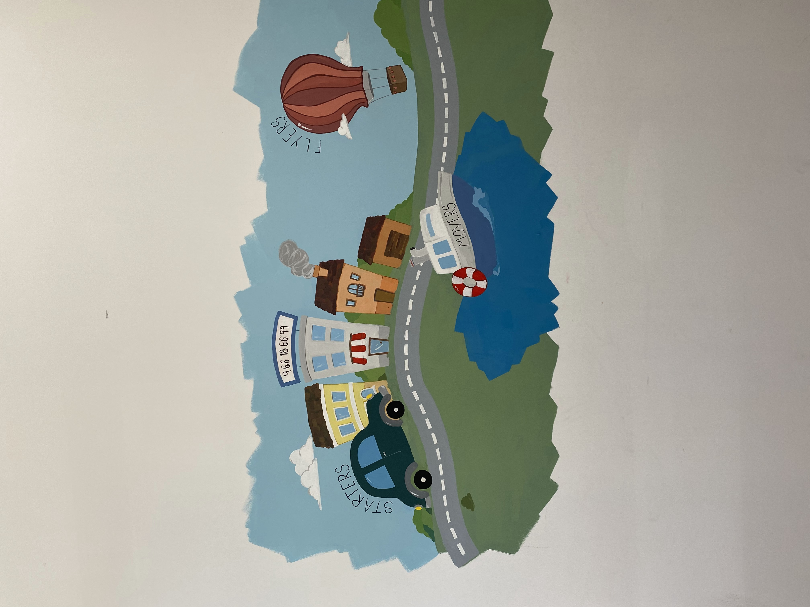
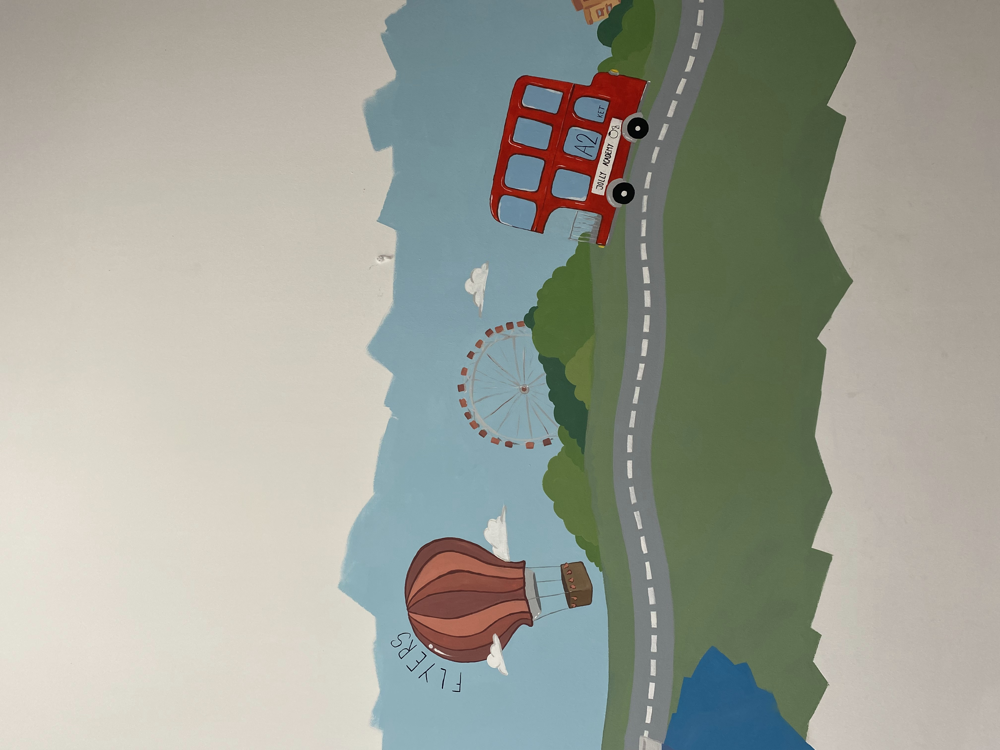
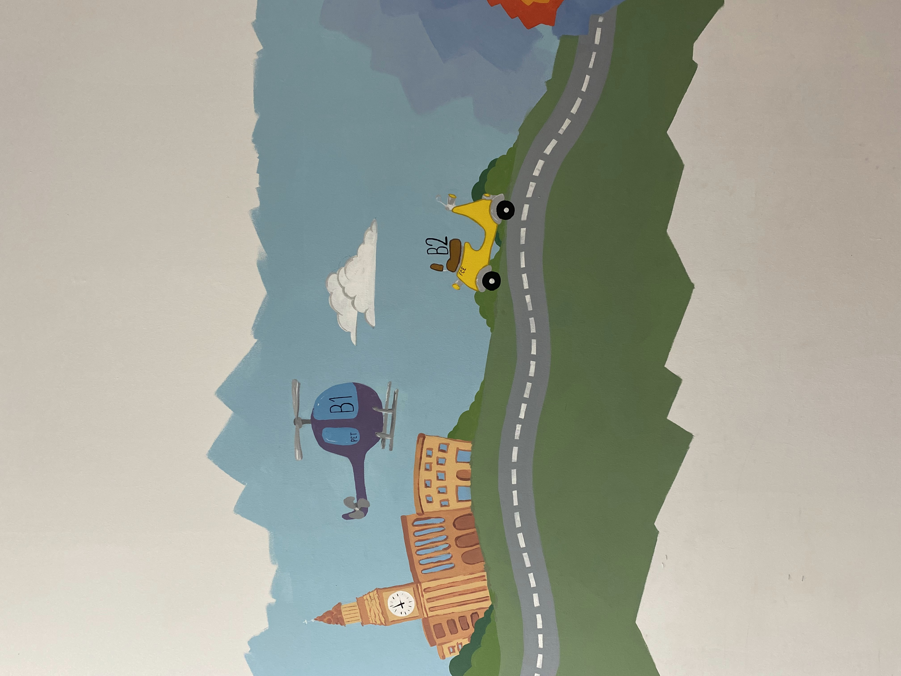
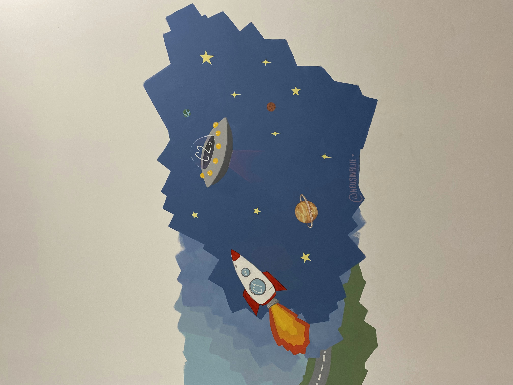
¿Quieres ver más?
Si quieres más información sobre mis trabajos o te gustaría realizar un encargo de algo similar, haz clic en el botón de contacto para hablar sin compromiso.
Contáctame